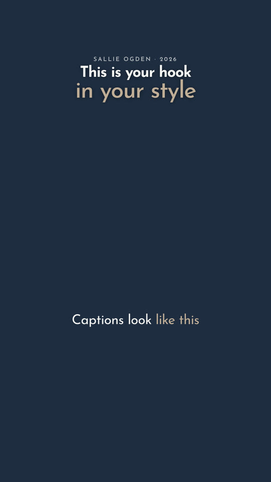
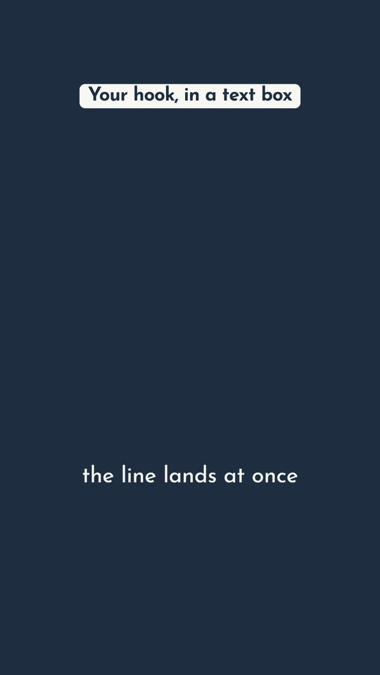
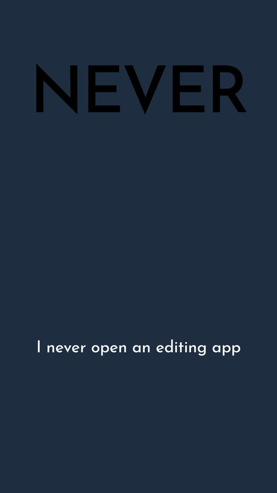
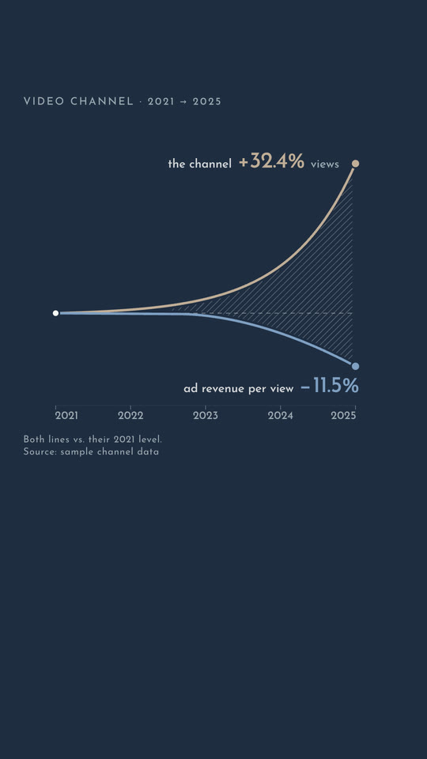
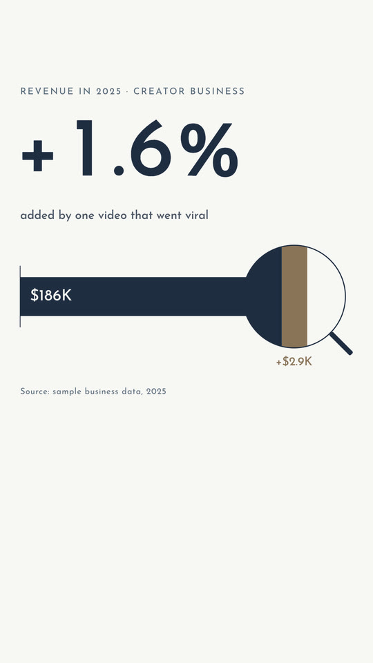
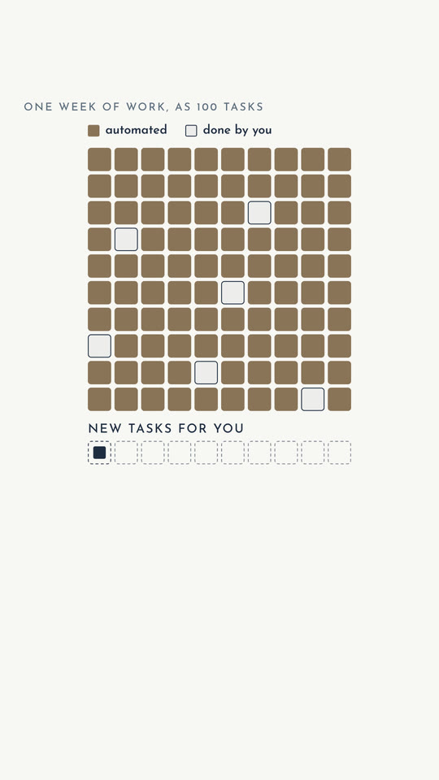

Sallie Ogden · style board
Your style
Calm, premium and warm: light grounds, navy words, soft shapes, thin lines and a lot of room. Videos are for women founders with established businesses who want more sales, better profit and an easier-to-run business. Direct, unhurried, real numbers, one clear next move. Never a generic tech startup: no gradients, neon, glass, emoji, hype or hustle language. The name on screen is Sallie Ogden; the company is The BRIMM.
Type
Display · Josefin Sans
The big idea
Text · Josefin Sans
Captions and labels read like this
Mono · Josefin Sans
2026 · 15% · $1.4M · −10%
Colour
Accent#C1AD97
emphasis, the thing to look at
emphasis, the thing to look at
Accent on light#8A7358
the same, on a light ground
the same, on a light ground
Negative#7FA0C4
losses, down, no
losses, down, no
Positive#FFFFFF
gains, up, yes
gains, up, yes
Light#F8F7F5
light ground, text on dark
light ground, text on dark
Dark#1F2D42
dark ground
dark ground
Ink#1F2D42
text on light
text on light
Caption boxrgba(31,45,66,.92)
behind captions on footage
behind captions on footage
Your three modes
How each mode looks for you, on a plain ground (run the board with --clip to see it on your footage).



Cards


